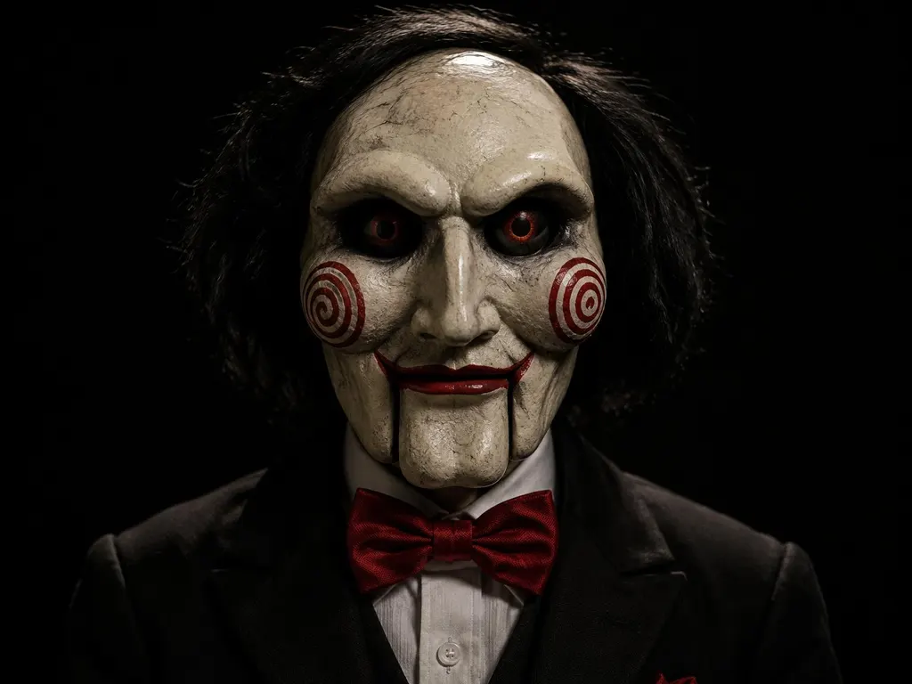

JOGADORES
Arquivo confidencial
- verongamer
- davigamer
- gamerlilia
- damingamer
- viktav23
- bhabela132
- nandaplays
+ 121 jogadores…

▶ PLAY 00:06:13Olá. Eu quero jogar um jogo.
00:10
ATÉ O SORTEIO
COMEÇAR O JOGO
LADO A
PRÊMIO
Set Gamer
Regras do jogo: 1 vencedor · sem repetição · todos com a mesma chance.